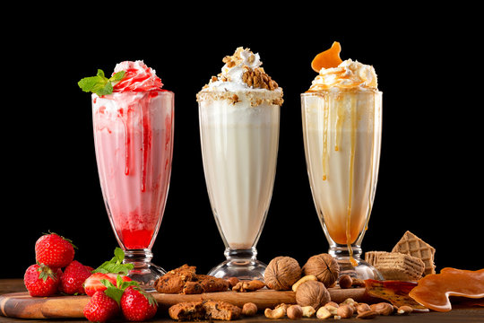

Top 1

Burgers are my go-to comfort food.
Top 2

Pizza is the perfect mix of cheese and toppings.
Top 3

French fries are crispy and addictive.
Top 4

Sushi is fresh and delicious.
Top 5
Bacon is crispy and full of flavor.
Top 6

Nacho fries are the best cheesy snack.
Top 7
Shakes are sweet and refreshing.
Top 8

Chicken is crispy and satisfying.
Top 9

Ice cream is my favorite cold treat.
Top 10

Coke is my go-to refreshing drink.